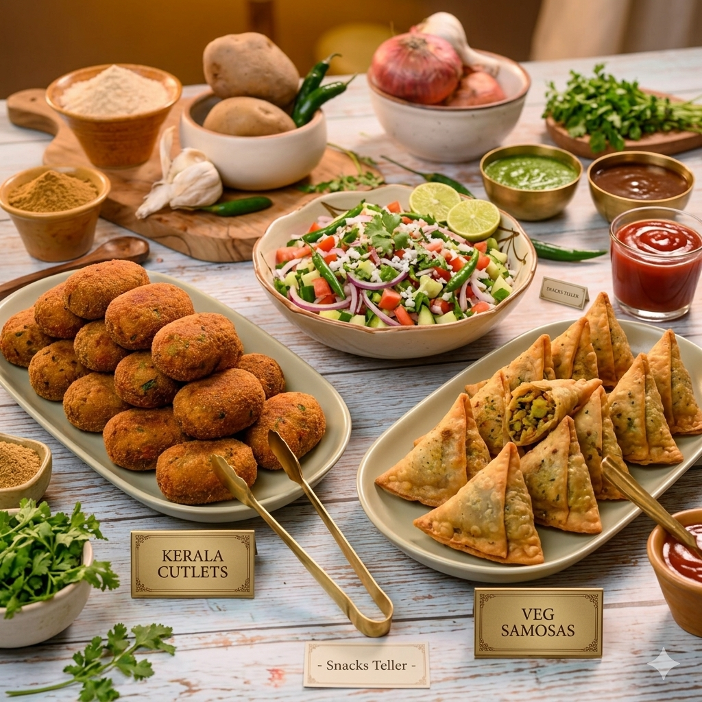
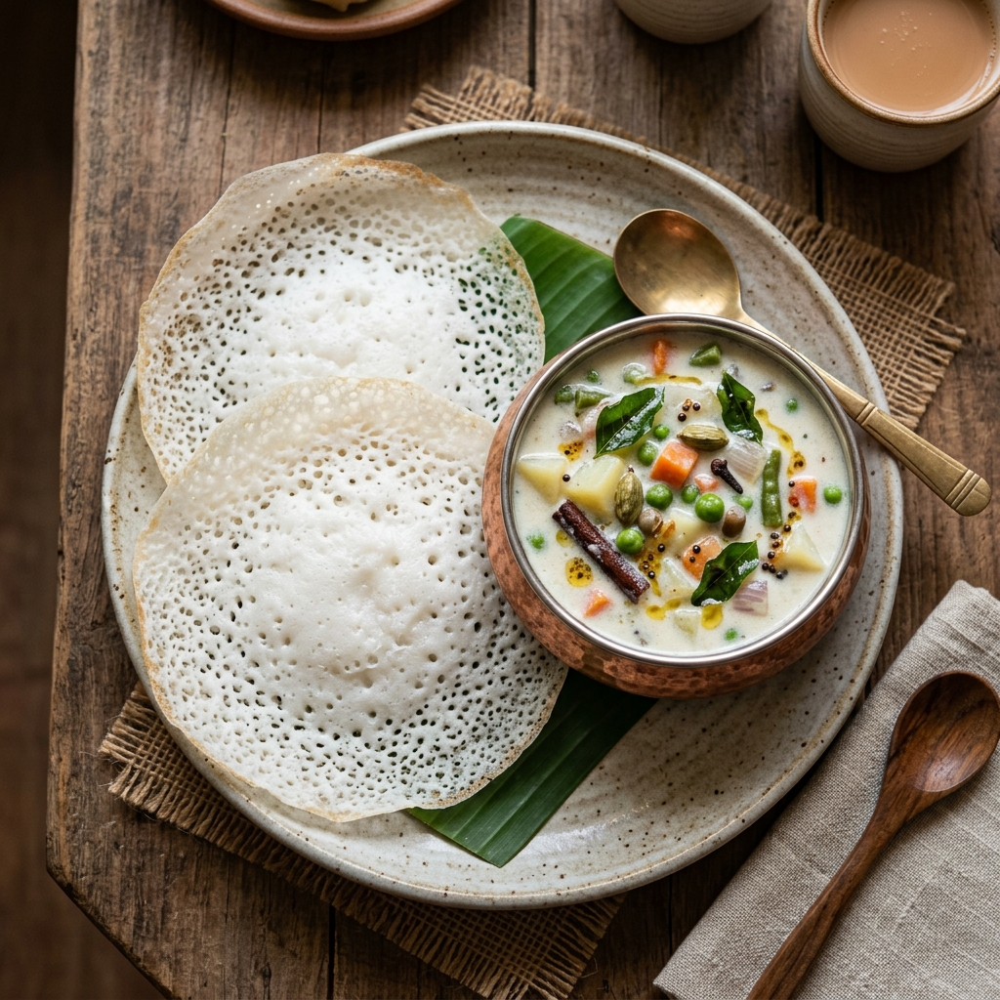
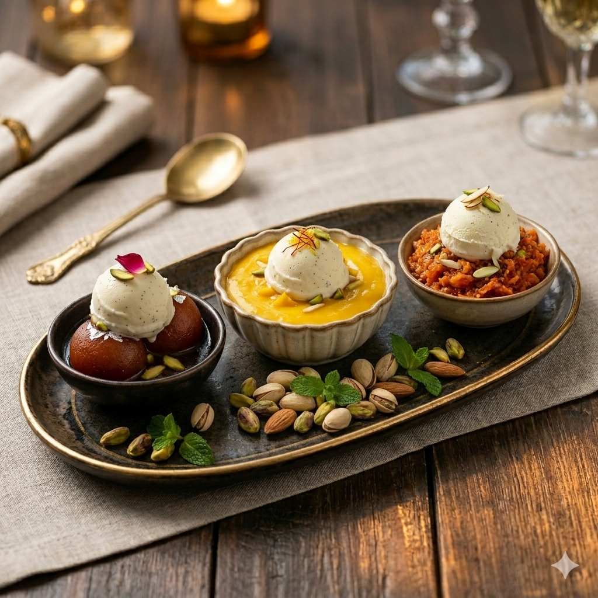
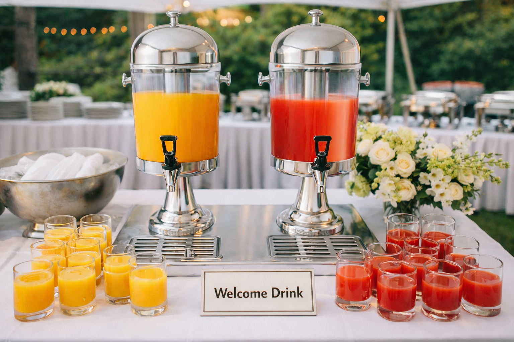
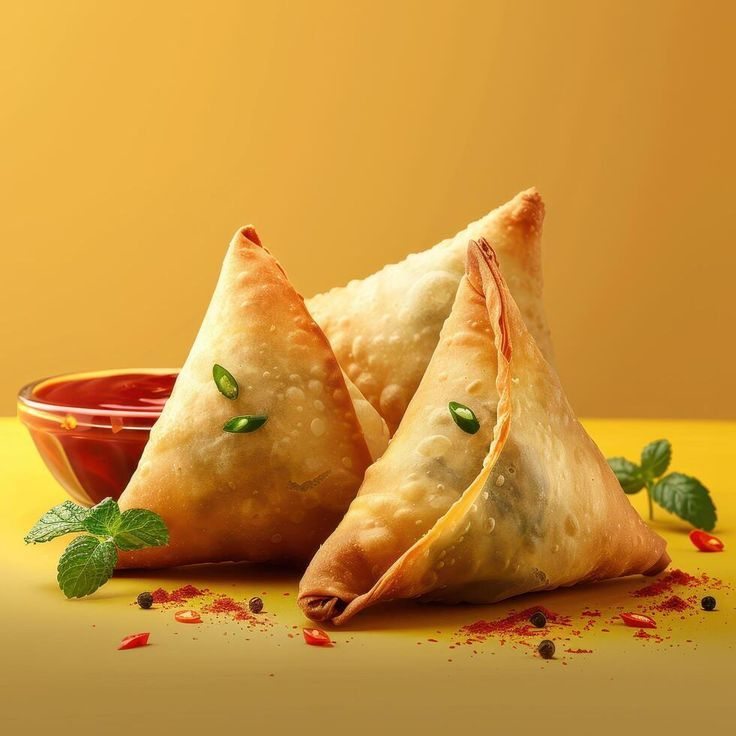

Authentische südindische Küche im Überblick

Eine köstliche Auswahl an Vorspeisen bestehend aus hausgemachten Cutlets & Samosas (Gemüse oder Hähnchen) und frischem Salat. Im Premium-Paket zusätzlich mit einem süßen traditionellen Snack verfeinert.

Traditionelle Reispfannkuchen mit hauchzartem Rand, serviert mit einem milden, hocharomatischen Kokosmilch-Eintopf nach Art des Hauses.
Zarte Hähnchenstücke in einer buttrig-milden Tomatensauce. Perfekt für Genießer milder Speisen.
Würziges Hähnchengericht im indochinesischen Stil mit frischem Paprika, Zwiebeln und feiner Schärfe.
Indischer Käse (Paneer) in einer samtigen, mild-würzigen Tomaten-Creme-Sauce.
Herzhafter Linseneintopf mit frischem Spinat, Knoblauch und traditionellen Gewürzen – rein pflanzlich.
Der Klassiker: Langkörniger Basmati-Reis, geschichtet mit in Joghurt und 18 Gewürzen mariniertem Hähnchen, im traditionellen 'Dum'-Verfahren saftig gegart.
Köstlicher Basmati-Reis, kombiniert mit aromatisch gewürzten Garnelen und feinen Kräutern.

Warme Milchteigbällchen in aromatischem Rosensirup, serviert mit einer Kugel Vanilleeis.
Fruchtig-samtiges Mango-Dessert, verfeinert mit Sahne und serviert mit Vanilleeis.
Süße Karottenspezialität mit Cashews und Rosinen, warm serviert mit Vanilleeis.

Erfrischende Auswahl: Traube, Mango oder Apfel. Stilvoll präsentiert.
Unser hausgemachter Joghurt-Drink mit reinem Mango-Mark.

Knusprige vegetarische Teigtaschen mit würziger Kartoffel-Erbsen-Füllung.